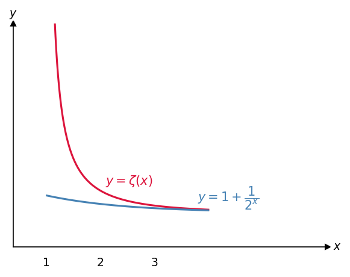
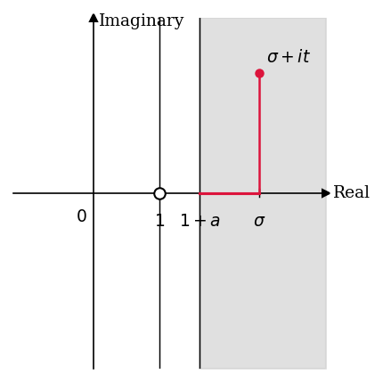
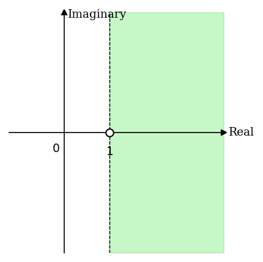

#03 Analytic Properties of Zeta#
\(\operatorname{Re}(s) > 1\)에서 \(\zeta(s)\)의 partial sums가 \(\operatorname{Re}(s) \geq 1 + a\)인 영역에서 uniformly convergent함을 증명하고, uniform limit theorem을 통해 \(\zeta(s)\)가 \(\operatorname{Re}(s) > 1\)에서 analytic function임을 확립한다.
Source: Zeta Explained #03
Reference: The Riemann Zeta-Function by Aleksandar Ivić (John Wiley & Sons, 1985)
Overview
Riemann zeta function을 설명하는 시리즈의 세 번째 강의이다. 이 시리즈는 기초부터 시작하여 고급 주제까지 단계적으로 다루며, 수강자는 calculus와 complex numbers에 대한 기본 지식을 갖추고 있다고 가정한다. Complex analysis의 관련 개념은 강의 중에 필요에 따라 설명한다. 참고 문헌은 Aleksandar Ivić의 The Riemann Zeta-Function: Theory and Applications (John Wiley & Sons, 1985)이다. 이 강의에서는 \(\zeta(s)\)의 partial sums가 \(\operatorname{Re}(s) \geq 1 + a\)인 영역에서 uniformly convergent함을 증명하고, 이로부터 \(\zeta(s)\)가 \(\operatorname{Re}(s) > 1\)에서 analytic function임을 보인다.
Contents
강의 도입: \(\operatorname{Re}(s) > 1\)에서 \(\zeta(s)\)의 analytic properties 개요
Uniform convergence의 정의 및 직관적 설명
Pointwise convergence와 uniform convergence의 차이
\(x > 1\)에서 \(\zeta(x)\)의 partial sums가 uniformly convergent하지 않음을 보이는 반례
\(\operatorname{Re}(s) \geq 1 + a\)에서 partial sums의 uniform convergence 증명
Complex analysis에서 uniform convergence가 중요한 이유
Analytic function의 정의 및 예시
Uniform limit theorem 적용: \(\zeta(s)\)가 \(\operatorname{Re}(s) > 1\)에서 analytic임을 결론
1. 강의 목표와 증명 전략#
Riemann zeta function은 \(\operatorname{Re}(s) > 1\)인 복소수 \(s\)에 대해 다음과 같이 정의된다.
이 강의의 목표는 \(\zeta(s)\)가 이 영역에서 어떤 analytic properties를 갖는지 규명하는 것이다. 증명은 두 단계로 진행된다.
첫째, \(\zeta(s)\)의 partial sums로 이루어진 함수열이 \(\operatorname{Re}(s) \geq 1 + a\)인 영역에서 uniformly convergent함을 보인다. 여기서 \(a > 0\)은 임의로 고정된 양의 실수이다. \(s \to 1\)일 때 \(\zeta(s) \to \infty\)이므로, \(s = 1\)의 singularity 근방에서의 발산을 피하기 위해 \(a > 0\)으로 영역의 경계를 \(\operatorname{Re}(s) = 1\)에서 멀리 떨어뜨린다.
둘째, complex analysis의 uniform limit theorem을 적용하여 \(\zeta(s)\)가 \(\operatorname{Re}(s) > 1\)에서 analytic임을 결론 내린다. Analytic function은 단순히 continuous하거나 differentiable한 함수보다 훨씬 강한 조건을 만족하는 함수로, infinitely differentiable하며 complex analysis의 강력한 도구들을 적용할 수 있다.
2. Uniform Convergence와 Pointwise Convergence#
Partial sums의 정의#
\(\zeta(s)\)의 \(n\)번째 partial sum을 다음과 같이 정의한다.
인덱스 변수로 \(k\)를 사용하는 것은, \(n\)이 이미 함수열의 인덱스로 쓰이기 때문이다. 처음 몇 항은 다음과 같다.
목표는 이 함수열 \(\{f_n(s)\}\)가 어떤 영역에서 \(\zeta(s)\)로 uniformly convergent함을 보이는 것이다.
Pointwise Convergence와 Uniform Convergence의 차이#
두 convergence 개념의 핵심적인 차이는 \(\epsilon\)과 점의 선택 순서에 있다.
Pointwise convergence: 함수열 \(f_1, f_2, \ldots\)이 \(f\)로 pointwise convergent하다는 것은, 점 \(x\)를 먼저 고정한 후, 임의의 \(\epsilon > 0\)에 대해 \(n \geq N\)이면 \(|f(x) - f_n(x)| < \epsilon\)을 만족하는 \(N\)이 존재함을 의미한다. 이때 \(N\)은 \(x\)에 의존할 수 있다.
Uniform convergence: 복소함수열 \(\{f_n\}\)이 영역 \(A\) 위에서 \(f\)로 uniformly convergent하다는 것은, 임의의 \(\epsilon > 0\)에 대해 \(n \geq N\)이면 영역 \(A\) 내의 모든 점 \(z\)에 대해 동시에 \(|f(z) - f_n(z)| < \epsilon\)을 만족하는 \(N\)이 존재함을 의미한다.
핵심적인 차이는 \(N\)의 선택 방식이다. Pointwise convergence에서는 \(N\)이 점 \(x\)에 의존할 수 있으나, uniform convergence에서는 \(N\)이 영역 내의 모든 점에 대해 동시에 유효하여야 한다.
이전 강의에서 integral test를 통해 \(x > 1\)일 때 \(\zeta(x)\)가 pointwise convergent함을 이미 보였다. 그러나 아래에서 확인하듯, \(\zeta(x)\)의 partial sums는 \(x > 1\) 전체에서는 uniformly convergent하지 않다.
3. \(x > 1\)에서 Uniform Convergence가 성립하지 않는 반례#
\(\zeta(x)\)의 partial sums가 \(x > 1\) 전체 영역에서 uniformly convergent하지 않음을 반례로 보인다. 실수 입력만을 고려한다.
\(\epsilon = 0.005\)로 고정한다. \(f_n(x)\)의 각 항은 최대 \(1\)이므로 \(f_n(x) \leq n\)이다. 이제 \(x = 1 + \frac{1}{n+1}\)로 선택하면, 이전 강의의 integral test 결과에 의해
이 성립한다. 따라서
이므로, 어떤 고정된 \(N\)을 선택하더라도 \(n \geq N\)인 \(n\)에 대해 위 부등식을 만족하는 \(x\)가 항상 존재한다. 따라서 uniform convergence의 정의를 만족하지 않는다.
이 반례의 근본 원인은 \(x = 1\)에서의 singularity이다. \(x\)를 \(1\)에 임의로 가깝게 선택하면 \(\zeta(x)\)의 값을 임의로 크게 만들 수 있으므로, \(f_n\)이 \(\zeta\)를 균일하게 근사할 수 없다.

Figure 1. \(y = \zeta(x)\)와 \(y = f_2(x) = 1 + 1/2^x\)의 그래프 비교
실수 \(x > 1\)에서 \(y = \zeta(x)\)와 \(y = f_2(x) = 1 + 1/2^x\)를 함께 나타낸 그래프이다. \(\zeta(x)\)는 \(x \to 1^+\)일 때 발산하여 \(f_2(x)\)와의 차이가 무한히 커지는 반면, \(x\)가 충분히 크면 두 함수의 차이는 작아진다. 이 그래프는 \(x > 1\) 전체 영역에서 partial sums가 uniformly convergent하지 않음을 시각적으로 보여준다. \(x = 1\)의 singularity 근방에서 임의로 큰 오차가 발생하므로, 모든 \(x > 1\)에 대해 균일하게 유효한 \(N\)을 선택하는 것은 불가능하다.
이 문제를 해결하기 위해, \(a > 0\)을 먼저 고정하고 영역을 \(\operatorname{Re}(s) \geq 1 + a\)로 제한하면 singularity로부터 충분한 거리를 확보할 수 있다. 다음 섹션에서 이 영역에서의 uniform convergence를 복소수 전체로 확장하여 증명한다.
4. \(\operatorname{Re}(s) \geq 1 + a\)에서의 Uniform Convergence 증명#
Step 1: Tail sum \(R_n(s)\)의 정의#
Uniform convergence의 정의에서 \(|f(z) - f_n(z)|\)에 해당하는 양을 tail sum \(R_n(s)\)로 정의한다.
\(R_n(s)\)는 \(\zeta(s)\)의 무한급수에서 처음 \(n\)개의 항을 제거한 나머지 합이다. Uniform convergence를 보이기 위해서는, 임의의 \(\epsilon > 0\)에 대해 영역 \(\operatorname{Re}(s) \geq 1 + a\) 내의 모든 \(s\)에 대해 \(|R_n(s)| < \epsilon\)을 만족하는 \(N\)이 존재함을 보이면 충분하다. 표준 표기에 따라 \(s = \sigma + it\)로 쓰며, \(\sigma = \operatorname{Re}(s)\), \(t = \operatorname{Im}(s)\)이다. 이 강의에서 \(\log\)는 자연로그 \(\log_e\)를 의미한다.
Step 2: \(|R_n(\sigma + it)| \leq R_n(\sigma)\)#
\(s = \sigma + it\)로 쓰면 \(k^s = k^{\sigma+it} = k^\sigma \cdot k^{it}\)이다. \(k = e^{\log k}\)임을 이용하여 전개하면,
이제 triangle inequality를 적용한다. \(|e^{i\theta}| = 1\)이므로 \(|e^{-it(\log k)}| = 1\)이 성립하며, \(\sigma > 1\)이면
이므로, 다음이 성립한다.
임의의 복소수 \(s = \sigma + it\)에서 tail sum의 절댓값은 같은 실부 \(\sigma\)를 갖는 실수에서의 tail sum 값으로 bound된다. 이 단계는 이전 강의에서 \(|\zeta(\sigma + it)| \leq \zeta(\sigma)\)를 도출한 것과 완전히 동일한 논리 구조이며, 합산의 시작 인덱스만 \(n + 1\)로 바뀐 것이다.
Step 3: \(R_n(\sigma) \leq R_n(1 + a)\)#
\(\sigma \geq 1 + a\)인 실수 \(\sigma\)에 대해 \(R_n(\sigma)\)와 \(R_n(1 + a)\)의 각 항을 비교한다.
\(\sigma \geq 1 + a\)이면 각 \(k \geq n + 1\)에 대해 \(k^\sigma \geq k^{1+a}\)이므로,
각 항을 비교하면 \(R_n(\sigma) \leq R_n(1 + a)\)가 성립한다.
Step 4: Uniform convergence 확립#
Step 2와 Step 3를 결합하면, \(\sigma = \operatorname{Re}(s) \geq 1 + a\)인 임의의 복소수 \(s = \sigma + it\)에 대해
이 성립한다. 이제 고정점 \(s = 1 + a\)에서의 pointwise convergence를 이용한다. 이전 강의에서 \(\operatorname{Re}(s) > 1\)이면 \(\zeta(s)\)가 pointwise convergent함을 integral test로 보였으므로, 임의의 \(\epsilon > 0\)에 대해
을 만족하는 \(N\)이 존재한다. 바로 이 \(N\)을 사용하면, \(\operatorname{Re}(s) \geq 1 + a\)인 모든 \(s\)에 대해 동시에
이 성립한다. \(N\)은 \(s\)에 의존하지 않으므로 이는 uniform convergence의 정의를 만족한다. 따라서 \(f_n(s)\)는 \(\operatorname{Re}(s) \geq 1 + a\)인 영역에서 \(\zeta(s)\)로 uniformly convergent하다.

Figure 2. \(\operatorname{Re}(s) \geq 1 + a\) 영역에서의 uniform convergence 증명 구조
복소평면에서 \(\operatorname{Re}(s) \geq 1 + a\)인 영역(회색 음영)과 임의의 점 \(\sigma + it\)를 나타낸다. 가로축은 \(\operatorname{Re}(s)\), 세로축은 \(\operatorname{Im}(s)\)이며, \(s = 1\)은 \(\zeta(s)\)의 singularity로 영역에 포함되지 않는다. 증명의 핵심 구조는 영역 내 임의의 점 \(\sigma + it\)에서의 \(|R_n(\sigma + it)|\)를, 먼저 실수축 위의 \(R_n(\sigma)\)로, 이어서 경계선 위의 점 \(R_n(1 + a)\)로 bound하는 부등식 연쇄에 있다. 경계선 위의 고정점 \(s = 1 + a\)에서의 pointwise convergence 하나만으로 영역 전체의 uniform convergence를 이끌어낼 수 있으며, 이때 선택된 \(N\)은 영역 내 모든 \(s\)에 대해 동시에 유효하다.
5. \(\zeta(s)\)의 Analyticity#
Uniform convergence가 중요한 이유#
Uniform convergence는 단순한 기술적 조건이 아니라, 수학적으로 유용한 연산을 정당화하는 핵심 조건이다. Uniform convergence가 확보되면 급수와 적분의 순서를 교환하거나, 급수와 미분의 순서를 교환하는 것이 허용된다.
더 나아가 complex analysis의 강력한 도구들은 함수가 analytic하다는 조건을 요구한다. Analytic function은 continuous하거나 단순히 differentiable한 함수보다 훨씬 강한 조건을 만족하며, complex analysis에서 핵심적인 역할을 한다.
Analytic function의 예시#
다음과 같이 익숙한 함수들은 모두 analytic이다.
다항식: \(z^5 - z^2 + 1\)
\(\sin(z)\)
\(e^z\)
\(n^{-s} = e^{-\sigma(\log n)} e^{-it(\log n)}\) (단, \(s = \sigma + it\), \(\sigma > 1\), \(n\)은 양의 정수)
두 analytic function의 합, 곱, 합성 역시 analytic이다. 따라서 각 \(f_n(s) = \sum_{k=1}^n k^{-s}\)는 유한 개의 analytic function의 합으로서 analytic이다.
참고: Weierstrass M-test를 이용하면 위의 증명을 더 간결하게 처리할 수 있다. 이 정리는, 영역 \(A\) 내의 모든 \(n\)과 \(z\)에 대해 \(|f_n(z)| \leq M_n\)이 성립하고 \(\sum_{n=1}^{\infty} M_n\)이 수렴하면, \(\sum_{n=1}^{\infty} f_n(z)\)가 영역 \(A\)에서 uniformly convergent함을 주장한다. 강의자는 복소해석학의 정리를 연속 적용하기보다 직관을 먼저 구축하고자 직접 증명의 방식을 택하였다.
Uniform Limit Theorem과 결론#
주의: 이하의 uniform limit theorem은 강의에서 증명 없이 인용된다. 함수열의 극한이 analytic이 되는 이유를 엄밀히 이해하려면 complex analysis 교재를 참고하여야 한다.
Uniform Limit Theorem: 함수열 \(\{f_n\}\)이 analytic functions의 수열이고 어떤 domain 위에서 \(f\)로 uniformly convergent하면, \(f\)는 그 domain 위에서 analytic이다.
이를 \(\zeta(s)\)에 적용한다. 각 partial sum \(f_n(s)\)는 \(\operatorname{Re}(s) > 1\)에서 analytic이고, 함수열 \(\{f_n(s)\}\)는 \(\operatorname{Re}(s) \geq 1 + a\)에서 \(\zeta(s)\)로 uniformly convergent함을 보였다. Uniform limit theorem에 의해 \(\zeta(s)\)는 \(\operatorname{Re}(s) \geq 1 + a\)에서 analytic이다.
\(a > 0\)은 임의의 양수이므로 얼마든지 작게 선택할 수 있다. 따라서 \(\zeta(s)\)는 \(\operatorname{Re}(s) > 1\)인 영역 전체에서 analytic이다.

Figure 3. 복소평면에서 \(\zeta(s)\)가 analytic한 영역 \(\operatorname{Re}(s) > 1\)
복소평면에서 \(\zeta(s)\)가 analytic한 영역 \(\operatorname{Re}(s) > 1\)(녹색 음영)을 나타낸다. 가로축은 \(\operatorname{Re}(s)\), 세로축은 \(\operatorname{Im}(s)\)이며, 경계선 \(\operatorname{Re}(s) = 1\)은 점선으로 표시된다. \(s = 1\)은 \(\zeta(s)\)의 singularity이므로 영역에 포함되지 않는다. 이 강의에서 확립된 analyticity는 \(\operatorname{Re}(s) > 1\)로 제한되며, 이후 강의들에서 analytic continuation을 통해 \(\zeta(s)\)를 복소평면의 나머지 영역으로 확장하게 된다. Figure 2와 비교하면, \(a > 0\)을 임의로 작게 취하여 \(\operatorname{Re}(s) \geq 1 + a\)에서의 결론을 열린 반평면 \(\operatorname{Re}(s) > 1\) 전체로 확장하는 과정이 이 최종 결론에 반영되어 있다.
6. Summary#
\(\zeta(s)\)의 \(n\)번째 partial sum을 \(f_n(s) = \sum_{k=1}^n k^{-s}\)로 정의하며, \(\zeta(s)\)는 이 함수열의 극한이다.
Pointwise convergence에서는 \(N\)이 점에 의존할 수 있으나, uniform convergence에서는 영역 내의 모든 점에 대해 동시에 유효한 \(N\)을 요구한다.
\(x > 1\) 전체 영역에서는 uniform convergence가 성립하지 않음을 반례로 보였다. \(x = 1 + \frac{1}{n+1}\)로 선택하면 \(\zeta(x) > n+1\)이지만 \(f_n(x) \leq n\)이므로, \(|R_n(x)| > 1\)이 항상 성립하여 uniform convergence의 정의를 만족할 수 없다.
\(a > 0\)을 고정하고 영역을 \(\operatorname{Re}(s) \geq 1 + a\)로 제한하면, tail sum \(R_n(s)\)에 대한 두 부등식 \(|R_n(\sigma+it)| \leq R_n(\sigma) \leq R_n(1+a)\)를 통해 uniform convergence가 성립함을 증명하였다.
각 \(f_n(s)\)는 analytic이고, uniform limit theorem에 의해 그 uniform limit인 \(\zeta(s)\)도 \(\operatorname{Re}(s) \geq 1 + a\)에서 analytic이다.
\(a > 0\)이 임의로 작을 수 있으므로, \(\zeta(s)\)는 \(\operatorname{Re}(s) > 1\)인 영역 전체에서 analytic이다.
이후 강의들에서는 이 영역에서 \(\zeta(s)\)의 추가적인 성질을 탐구하고, analytic continuation을 통해 복소평면의 나머지 영역으로 확장하는 과정을 다룬다.
7. Review Questions#
Pointwise convergence와 uniform convergence의 정의를 각각 서술하고, 두 개념의 핵심적인 차이를 \(N\)의 선택 방식을 중심으로 설명하라.
\(f_n(s)\)가 \(\operatorname{Re}(s) > 1\)에서 pointwise convergent함은 이전 강의에서 어떤 도구를 사용하여 보였는가? 그 논리의 핵심을 간략히 설명하라.
\(\zeta(x)\)의 partial sums가 \(x > 1\) 전체에서 uniformly convergent하지 않음을 보이는 반례를 구성하라. \(x = 1 + \frac{1}{n+1}\)을 선택하면 왜 \(|R_n(x)| > 1\)이 성립하는가?
Tail sum \(R_n(s)\)를 정의하고, uniform convergence를 보이기 위해 이 개념을 도입하는 이유를 설명하라.
\(|R_n(\sigma + it)| \leq R_n(\sigma)\)를 증명하라. 이때 \(|e^{-it(\log k)}| = 1\)이 성립하는 이유를 기하학적으로 설명하라.
\(\sigma \geq 1 + a\)일 때 \(R_n(\sigma) \leq R_n(1 + a)\)가 성립함을 term-by-term 비교를 통해 보여라.
두 부등식 \(|R_n(\sigma+it)| \leq R_n(\sigma)\)와 \(R_n(\sigma) \leq R_n(1+a)\)를 결합하여 \(\operatorname{Re}(s) \geq 1 + a\)에서의 uniform convergence 증명을 완성하라. 이때 고정점 \(s = 1 + a\)에서의 pointwise convergence가 어떤 역할을 하는가?
Weierstrass M-test를 서술하라. 이 정리를 \(\zeta(s)\)의 partial sums에 직접 적용하려면 \(M_k\)를 어떻게 설정하여야 하는가?
Uniform limit theorem을 서술하고, 이를 \(\zeta(s)\)에 적용하여 \(\zeta(s)\)가 \(\operatorname{Re}(s) > 1\)에서 analytic임을 결론 짓는 논리를 서술하라.
\(a > 0\)이 증명에서 임의로 선택 가능하다는 사실이 왜 \(\zeta(s)\)가 \(\operatorname{Re}(s) \geq 1 + a\)가 아닌 열린 영역 \(\operatorname{Re}(s) > 1\) 전체에서 analytic임을 함의하는지 설명하라.